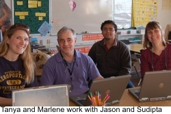
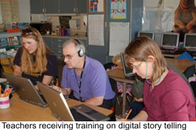

|
The Teachers Workshop
The teachers went through two separate workshops. In the first workshop they learned about the elements of digital story telling and in the second they covered the geoscience content. Training on Digital Story TellingTraining on digital story telling involved two dedicated sessions with project Co-PI, Jason Ohler. In the first session held on January 21, 2008 in Fairbanks, the participants learned:


Geoscience Content WorkshopThe geoscience workshop was conducted at the University of Alaska Fairbanks on March 6, 2008. It was attended by the participant teachers, native elders, scientists and subject experts on the topics of permafrost and forest fires, coming from various different agencies. The workshop included technincal presntations, panel discussions, and round-table brainstorming sessions to strategize ways to effectively introduce geoscience content in the classroom.
|
| |
|